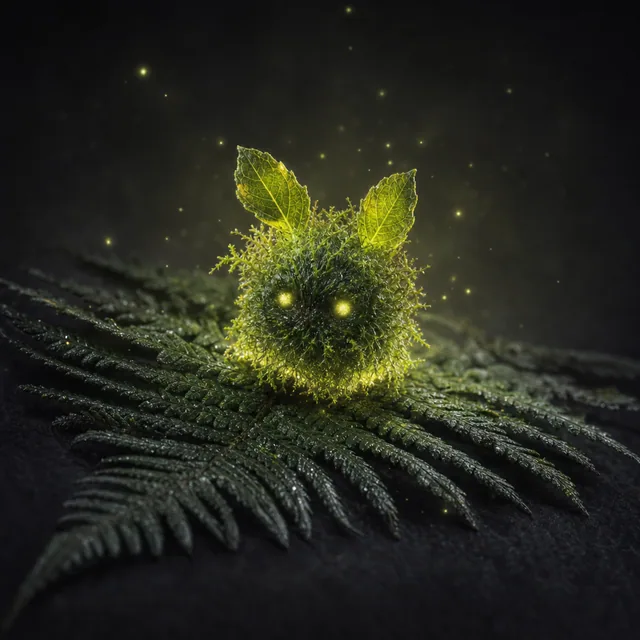

Предмет · Лесное · №10
Игривый лесной дух следует за вами как безмолвный страж. Когда урон вынудит вас отметить последнюю Рану, вы можете потратить 1 Надежду, чтобы пожертвовать духом. Вы не отмечаете эту Рану и не совершаете Предсмертный Ход. Дух исчезает навсегда.
Открыть в генераторе лута